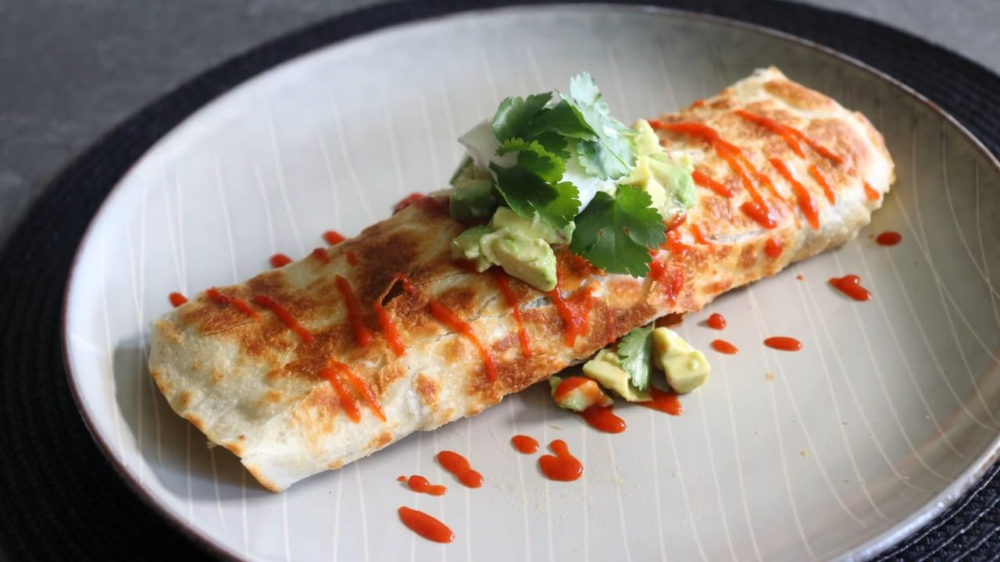

Crispy Rolled Breakfast Burrito

Description
A mixture of crisp and morning goodness, this burrito brings a colorful
flavor palette right to the comfort of your own hands. Sure, it may
include some standard burrito sabor, but it brings in a delicious
crisp that sets it apart from its little brothers. Give it a try, you will
not regret it.
Ingredients
- 4 bacon slices
- 1 russet potato, peeled and cubed
- salt and ground black pepper
- 1 pinch cayenne pepper
- 1/4 cup sliced oniion
- 1/4 cup sliced bell pepper
- 1 cup grated Cheddar cheese
- 4 large eggs, beaten
- 2 (10 inch) flour tortillas
- 1 teaspoon hot sauce, or to taste
- 1 medium avocado, cubed
- 2 tablespooons sour cream
- 1 tablespoon cilantro leaves
Steps
-
Place bacon in a cold, nonstick pan over medium to medium-high heat.
Cook until browned, crisp, and foamy, about 10 minutes. Turn off the
heat, remove to a paper towel-lined plate, and set aside.
-
Place cubed potatoes into the pan of bacon fat and set heat to medium.
Season with salt, black pepper, and cayenne. Cook, tossing and turning
occasionally, until the potatoes are browned, crispy, and tender, 8 to
10 minutes. Add onions and peppers, and cook until they soften up a bit,
2 to 3 minutes. Transfer everything into a strainer set over a bowl to
drain excess bacon fat.
-
To make one breakfast burrito, place 2 strips cooked bacon back in the
pan. Turn heat to medium and scatter 1/2 of the potato mixture in and
around. Scatter over 1/2 of the Cheddar cheese as evenly as possible,
and then pour 2 beaten eggs over top.
-
Tilt the pan to make sure the egg is evenly distributed. Place a
tortilla over the top and press down lightly into the rest of the
ingredients. Cook just until the eggs firm up enough to flip, about 1
minute. Use a spatula to carefully, but confidently, flip everything
over so the tortilla is now on the bottom. Cook until the tortilla is as
browned and crispy as you like, 2 to 3 minutes.
-
Remove from the heat and transfer onto a plate. Roll into a burrito and
serve with hot sauce, avocado, sour cream, and cilantro. Repeat to cook
remaining burrito.